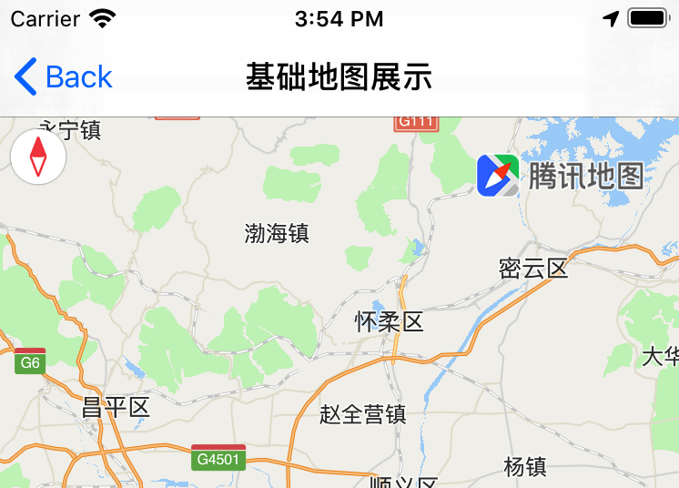
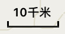
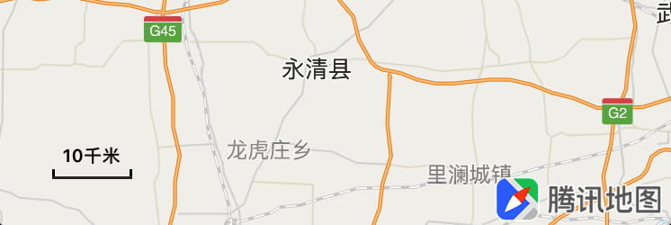
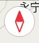
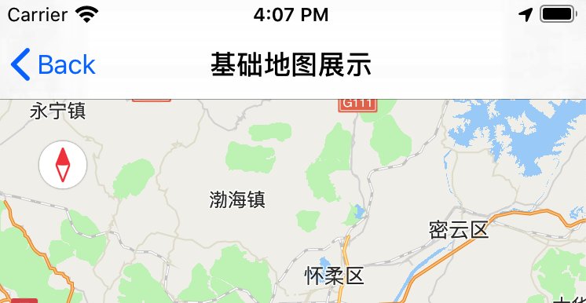

基础控件设置
腾讯地图SDK有三个基础控件，包含地图Logo控件、比例尺控件、指南针控件，用于展示地图当前的基本状态以及位置调整。
简介
地图中的基础控件可以帮您直观的了解地图当前的状态，包含：地图Logo、比例尺和指南针。
本篇内容介绍如何控制地图控件的显隐，比例尺以及地图Logo可以控制位置，具体可参考：控件位置调整。
地图Logo控件
地图Logo控制开关
地图Logo作为腾讯地图SDK的标识，默认显示在地图的左下方。开发者不应隐藏、遮挡。因此地图Logo无法控制其显隐。
但是可以通过-(void)setLogoScale:方法改变地图Logo的大小，示例代码如下：
// scale: Logo大小. 基于原始大小的比例值, 默认为1.0. 有效区间[0.7, 1.3]
[self.mapView setLogoScale:1.3];
地图Logo位置调整
地图Logo控件以地图四角为基准点，例如可以通过以下代码来将Logo控件设置到地图的右上角，并预留出指定的边距：
[self.mapView setLogoMargin:CGPointMake(20, 20) anchor:QMapLogoAnchorRightTop];

QMapLogoAnchor用于设置地图的基准点，共有以下位置：
| 位置 | 说明 |
|---|---|
| QMapLogoAnchorRightBottom | 默认值，右下对齐 |
| QMapLogoAnchorLeftBottom | 左下对齐 |
| QMapLogoAnchorLeftTop | 左上对齐 |
| QMapLogoAnchorRightTop | 右上对齐 |
| QMapLogoAnchorMax | 边界，自身无实际意义，即默认的右下对齐 |
比例尺控件
比例尺控件开关
比例尺控件默认隐藏，显示在地图的左下角，最小比例为1 : 1000km，最大比例为1 : 5m，可通过showsScale属性来控制显隐。示例代码如下：
// YES为显示，NO为隐藏
self.mapView.showsScale = YES;
地图在一段时间内没有发生缩放级别变化时，将逐渐隐藏。当再次缩放时，将会显示出来。

比例尺控件位置调整
比例尺控件默认显示在地图的左下角，在开启了比例尺控件显示之后，可以通过以下代码来控制其偏移量：
// x值取正表示向右偏移，取负表示向左偏移
// y值取正表示向下偏移，取负表示向上偏移
[self.mapView setScaleViewOffset:CGPointMake(20, -20)];

指南针控件
指南针控件开关
地图控件默认隐藏，显示在地图的左上角，可通过showsCompass属性来控制显隐。示例代码如下：
// YES为显示，NO为隐藏
self.mapView.showsCompass = YES;

指南针控件位置调整
指南针控件默认显示在地图的左上角，在开启了指南针控件显示之后，可以通过代码来控制其偏移量：
// x值取正表示向右偏移，取负表示向左偏移
// y值取正表示向下偏移，取负表示向上偏移
[self.mapView setCompassOffset:CGPointMake(20, 20)];
